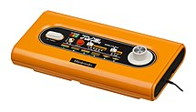
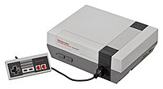
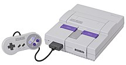
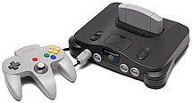
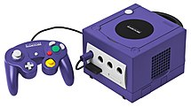
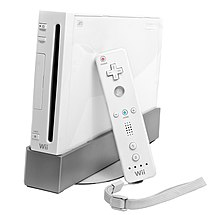
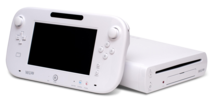
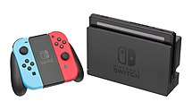

| Color TV-Game | Release Date: June 1, 1977 |  | Color TV-Game is a series of five dedicated home consoles released only in Japan. Each of the consoles contained a small number of games and a built-in controller. In total, approximately 3 million units were sold.[3] |
|---|---|---|---|
| Nintendo Entertainment System | Release Date: July 15, 1983 |  | Released July 15, 1983, the Nintendo Entertainment System (NES) is an 8-bit video game console released by Nintendo in North America, South America, Europe, Asia, Oceania and Africa and was Nintendo's first home video game console released outside Japan. In Japan, it is known as the "Family Computer" (or "Famicom", as it is commonly abbreviated). Selling 61.91 million units worldwide, the NES helped revitalize the video game industry following the video game crash of 1983 and set the standard for subsequent consoles in everything from game design to business practices. The NES was the first console for which the manufacturer openly courted third-party developers. Many of Nintendo's most iconic franchises, such as The Legend of Zelda and Metroid were started on the NES. Nintendo continued to repair Famicom consoles in Japan until October 31, 2007, attributing the decision to discontinue support to an increasing shortage of the necessary parts. |
| Super Nintendo Entertainment System | Release Date: November 21, 1990 |  | The SNES was Nintendo's second home console, following the Nintendo Entertainment System. Whereas the earlier console had struggled in the PAL region and large parts of Asia, the SNES was a global success, albeit one that could not match its predecessor's popularity in Northeast Asia and North America—due in part to increased competition from Sega's Genesis console (released in Europe and Asia, but Korea as the Mega Drive). Despite its relatively late start, the SNES became the best selling console of the 16-bit era, selling 49.10 million systems worldwide.[1] The SNES library is known for upgrading some of Nintendo's most famous franchises, and making the games even more critically acclaimed, such as Super Metroid, The Legend of Zelda: A Link to the Past, Final Fantasy IV and VI, Donkey Kong Country, and Super Mario World, as well starting some popular franchises such as Star Fox and Mega Man X. |
| Nintendo 64 | Release Date: June 23, 1996 |  | Released June 23, 1996, the Nintendo 64, commonly called the N64, and codenamed Ultra 64, was Nintendo's third home video game console for the international market. It was released with three launch games in Japan (Super Mario 64, Pilotwings 64 and Saikyo Habu Shogi) and two in North America (Super Mario 64 and Pilotwings 64). PAL regions also had three launch titles (Super Mario 64, Shadows of the Empire and Pilotwings 64) with Turok: Dinosaur Hunter delayed until three days after launch. Other key games included Donkey Kong 64, Diddy Kong Racing, Banjo-Kazooie, two games in The Legend of Zelda series, GoldenEye 007, Mario Kart 64, Super Smash Bros., and Star Fox 64. The Nintendo 64 sold 32.93 million systems. |
| Gamecube | Release Date: November 5, 2001 |  | The Nintendo GameCube (commonly shortened to GameCube, NGC, or GCN) was released on November 5, 2001. It was Nintendo's sixth generation game console, the same generation as Sega's Dreamcast, Sony's PlayStation 2, and Microsoft's Xbox. Until the console's unveiling at SpaceWorld 2000, the design project was known as Dolphin—this can still be seen in the console and its accessories' model numbers. The GameCube is the most compact sixth generation console. The GameCube is Nintendo's first game console to use optical discs rather than game cartridges. An agreement with the optical drive manufacturer Matsushita led to a DVD-playing GameCube system named the Panasonic Q, which was only released in Japan. Much of Nintendo's core line-up centered on sequels to their established hit franchises such as Super Mario Sunshine, Super Smash Bros. Melee, The Legend of Zelda: Wind Waker, Metroid Prime, Pokémon Colosseum, and Star Fox Adventures, while new franchises like Animal Crossing and Pikmin were born, although the former franchise had seen a Japan-exclusive release on the N64. The GameCube has sold 21.74 million units. |
| Wii | Release Date: November 19, 2006 |  | The Wii's internal hardware is an updated derivative of that of the GameCube; in comparison to its seventh-generation competitors, the Wii had lower overall graphics capabilities, and does not output in high-definition.[11][9] The Wii also featured internet-enabled features; the Nintendo Wi-Fi Connection service allowed supported games to offer online multiplayer and other features, while the WiiConnect24 feature allowed messages and updates to be downloaded while the console was in standby. Through Wii Shop Channel, additional games and apps can be downloaded or purchased for the console, including Virtual Console—a selection of classic video games emulated from older consoles. Early models of the Wii also had backwards compatibility with GameCube games and controllers, but this was dropped from later hardware revisions. |
| WiiU | Release Date: November 18, 2012 |  | The Wii U was released on November 18, 2012 as a direct successor to the Wii, and the first entry in the eighth generation of home video game consoles. The Wii U's distinguishing hardware feature is the GamePad, a tablet-like controller which contains a touchscreen that wirelessly streams a video output from the console. The GamePad's display can be used to provide alternative or complementary perspectives within a game, or as the main display in lieu of a television.[16][17] In particular, Nintendo promoted the concept of "asymmetric" multiplayer, where a player with the GamePad would have a different objective and perspective than that of other players.[18] Alongside the GamePad, the Wii U supports Wii controllers and games. A conventional gamepad known as the Wii U Pro Controller was also released. |
| Switch | Release Date: March 3, 2017 |  | The Nintendo Switch was released on March 3, 2017, and is Nintendo's second entry in the eighth generation of home video game consoles. The system was code-named "NX" prior to its official announcement. It is a hybrid device that can be used as a home console inserted to the Nintendo Switch Dock attached to a television, stood up on a table with the kickstand, or as a tablet-like portable console. It features two detachable wireless controllers called Joy-Con, that can be used individually or attached to a grip to provide a more traditional gamepad form. Both Joy-Con are built with motion sensors and HD Rumble, Nintendo's haptic vibration feedback system for improved gameplay experiences. However, only the right Joy-Con has an NFC reader on its analog joystick for Amiibo and an IR sensor on the back. The Nintendo Switch Pro Controller is a traditional style controller much like the one of the GameCube. |